Mengecek semua servis…
PERINGATAN!
Sumber: USGS
GEMPA M 0.0
-
-
BERHATI-HATI DAN TETAP STAY SAFE
Data: USGS & BMKG (Badan Meteorologi, Klimatologi dan Geofisika). Bukan peringatan dini resmi seperti EEW Jepang - info ini baru tercatat SETELAH gempa terjadi, bukan sebelum guncangan datang. Ikuti arahan BMKG/BNPB setempat.
M - · -
Laporan disimpan lokal di perangkat ini saja - situs ini gak punya server pusat buat kumpulin laporan warga. Bagikan ke keluarga/grup lewat WhatsApp, atau cek laporan resmi BMKG.
Lihat laporan resmi BMKGISFR-ARVI
Pantauan gempa bumi dan radar curah hujan secara langsung, dilengkapi titik api contoh dan persentase distribusi per wilayah untuk peneliti dan pengguna umum.
Tap tombol filter (☰) di pojok kanan atas peta untuk atur layer, mode cuaca, dan rentang titik api. Titik api pakai data langsung NASA GIBS/FIRMS (VIIRS), tanpa API key.
Nyalain tampilan alarm full-layar + sirine + getar pakai data simulasi (bukan gempa/tsunami asli) - buat coba tombol "Saya Aman"/"Laporkan" atau ngecek suara & getaran HP kamu.
Mati = foto satelit polos tanpa overlay pucat. Nyala = nama jalan/kampung ikut muncul, tapi warnanya jadi agak pudar karena ditumpuk di atas foto.
Dapat notifikasi dari browser (di luar tab ini) saat ada gempa M5+ atau zona kritis titik api baru — berguna kalau tab ini diminimize atau kamu sedang buka tab lain. Polling tetap butuh browser/tab tetap terbuka (bukan push server sungguhan).
Status: belum diaktifkan.
"Dunia" memantau titik api di semua negara (bukan cuma Indonesia) untuk alarm/notifikasi. Catatan jujur: data satelit ini TIDAK real-time sedetik di manapun - NASA sendiri baru menyediakan data ini dalam hitungan menit sampai jam setelah satelit lewat, jadi ini secepat yang secara fisik memungkinkan, bukan instan.
Aktifkan ini biar alarm full-layar bunyi kalau ada gempa DALAM radius 50 km dari lokasimu sekarang (mis. kamu di Balikpapan, ada gempa M4.2 di Balikpapan → alarm langsung muncul) - butuh izin lokasi browser. Tanpa ini, alarm cuma bunyi buat gempa M5+ di mana pun di Indonesia. Radius ini juga dipakai buat filter tampilan gempa & statistik titik api, tapi bukan layer raster titik api NASA.
Mau pakai lokasi asli HP-mu tanpa nyalain tracking terus-menerus? Ada tombol "Gunakan Lokasi Saat Ini (GPS)" di panel Statistik (ikon pie chart) - sekali tap, ambil GPS asli sekali jalan.
Beda dari "Notifikasi browser" di atas - ini kirim alarm dari server kami (bukan dari tab ini), jadi tetap jalan walau situs ini gak dibuka. Butuh izin notifikasi browser. Kalau kamu udah aktifin "Lokasi Saya" di atas, lokasimu ikut dikirim ke server (cuma buat ngecek jarak ke gempa, gak dipakai buat hal lain) supaya gempa kecil di dekatmu juga ke-push, bukan cuma M5+.
Without a key, the fire hotspot statistics on the right panel use sample data. Add a free MAP_KEY from FIRMS so the statistics use real fire hotspot data.
Get one for free at firms.modaps.eosdis.nasa.gov/api/area (enter your email, the key appears instantly).
Status: using sample data (no MAP_KEY yet).
Asap kebakaran hutan sering lebih berbahaya dari titik apinya sendiri. Tambahkan API key gratis OpenAQ untuk melihat estimasi PM2.5 dari stasiun terdekat — dekat lokasimu (kalau "Lokasi Saya" aktif) atau dekat zona titik api terpadat.
Get one for free at explore.openaq.org/register.
Status: belum ada API key.
Statistik & radius di bawah ini dihitung dari lokasimu. Pakai GPS asli HP-mu (sekali ambil, bukan tracking terus-menerus) supaya angkanya sesuai posisimu sekarang.
Status: belum pakai lokasi GPS.
Comparison of earthquake events (live, USGS) vs fire hotspotsDEMO currently shown on the map.
Magnitudo maksimum per hari (garis, kiri) dan jumlah gempa per hari (batang, kanan) selama 30 hari terakhir - sumber USGS. Pilih wilayah untuk fokus ke satu area.
Estimasi PM2.5 dari stasiun OpenAQ terdekat - dekat lokasimu kalau "Lokasi Saya" aktif, atau dekat zona titik api terpadat. Butuh API key gratis OpenAQ lewat panel filter (☰).
Masukkan API key OpenAQ lewat panel filter (☰) untuk mengaktifkan.
Tingkat aktivitas gunung api aktif di Indonesia dari PVMBG/MAGMA Indonesia (Badan Geologi ESDM) - Normal, Waspada, Siaga, Awas. Diperbarui: -.
Memuat data PVMBG…
Log update gempa (M5+), rangkaian gempa, dan titik api/zona kritis terbaru yang terdeteksi selama sesi ini.
Belum ada update baru di sesi ini.
Example: "Kalimantan 60% Fire" - regions are grouped automatically from coordinates and split by disaster type. Useful for researchers spotting distribution patterns, and for a quick summary at a glance.
Loading…
Earthquakes: USGS GeoJSON (real-time, last 30 days, M3.5+).
Radar/clouds: RainViewer (real-time, last 2 hours animated + 30-minute forecast, NEXRAD-style dBZ color scheme, no API key needed).
Fire hotspots (map): NASA GIBS/FIRMS VIIRS overlay - real-time, no API key needed.
Fire hotspots (regional stats): sample data by default. Add a free FIRMS MAP_KEY via the map's filter button (☰) to use real per-coordinate fire hotspot data.
Zona kritis: hotspot points are grouped into a ~55 km grid; a cell with 30+ points in range is flagged "Zona Kritis" (dense cluster), not just a raw point tally.
Rangkaian gempa: gempa M3.5+ dikelompokkan dalam grid ~33 km & jendela 3 hari; 3+ gempa di sel yang sama ditandai sebagai indikasi rangkaian utama-susulan (bukan prediksi resmi BMKG).
Kualitas udara: PM2.5 dari stasiun OpenAQ terdekat (butuh API key gratis), dikategorikan pakai ambang PM2.5 24 jam standar EPA sebagai pendekatan AQI - bukan perhitungan ISPU resmi.
Info darurat: nomor kontak nasional (112/113/115/117/118/119) muncul otomatis saat "Lokasi Saya" aktif dan ada gempa/titik api dalam radius 50 km.
Gunung berapi: status aktivitas (Normal/Waspada/Siaga/Awas) dari PVMBG/MAGMA Indonesia (Badan Geologi ESDM). MAGMA tidak menyediakan API JSON publik, jadi data diambil dengan membaca halaman status resminya lewat proxy CORS - sama seperti cara BMKG di atas diakses, tapi kali ini kontennya HTML (bukan JSON) sehingga lebih rentan berhenti cocok kalau PVMBG mengubah tampilan halamannya. Fitur bonus best-effort, bukan dependensi wajib - kalau gagal dimuat, panel menampilkan link langsung ke MAGMA Indonesia.
Potensi tsunami: dibaca dari field "Potensi" pada data gempa resmi BMKG yang sama (autogempa.json) - BMKG sendiri yang menandai apakah satu kejadian gempa "Berpotensi tsunami" atau "Tidak berpotensi tsunami", jadi bukan perhitungan/prediksi dari situs ini. Kejadian berpotensi tsunami memicu alarm/badge terpisah dan (kalau notifikasi latar belakang diaktifkan) dikirim ke semua pengguna terdaftar tanpa dibatasi radius 50 km, karena ancaman tsunami tidak setempat seperti guncangan.
Browser notifications: opt-in via the filter panel (☰) - fires an OS notification for M5+ quakes, tsunami-potential quakes, rangkaian gempa, elevated volcano status, and new critical fire zones while this tab is backgrounded. Requires the browser/tab to stay open.